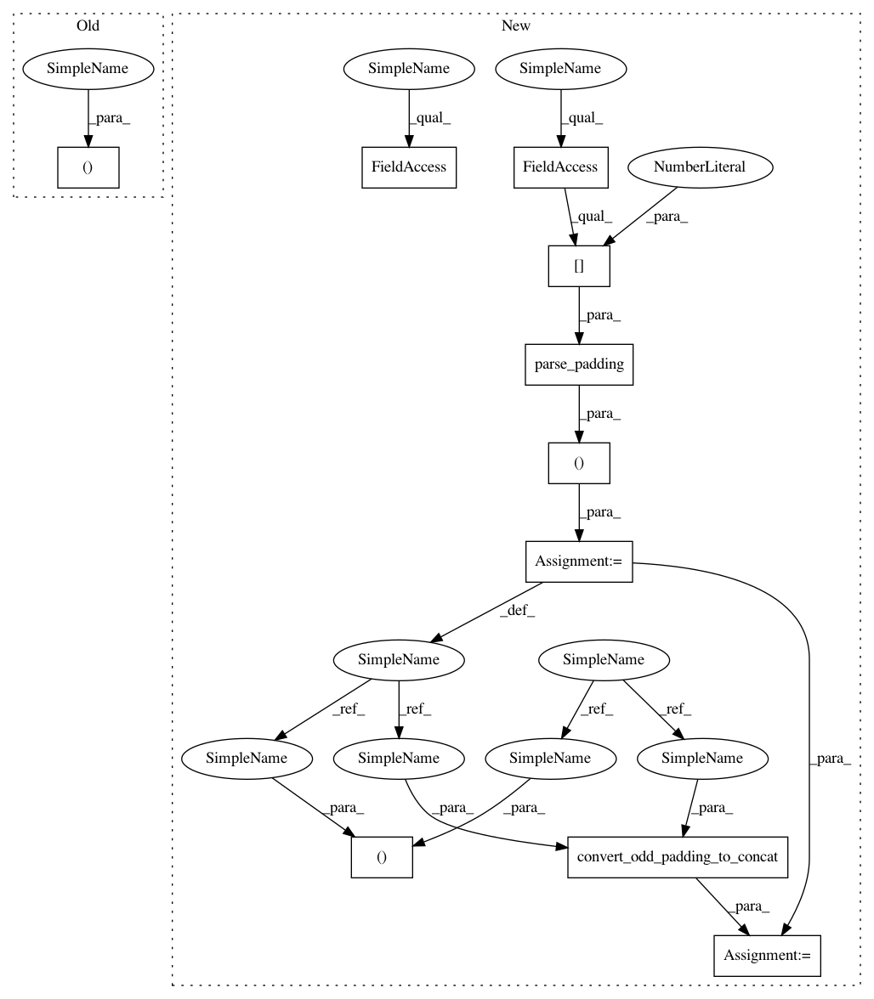

cb454682666fda678e5f2fabd4256d18bae6e50c,src/graph_transpiler/webdnn/frontend/keras/layers/convolutional.py,,_convert_conv2d,#Any#Any#,28
Before Change
w = converter.convert_to_constant_variable(k_op.kernel, Order([Axis.KH, Axis.KW, Axis.C, Axis.N]))
x, padding = convolution_handler_preprocess(x, ksize=k_op.kernel_size, padding=k_op.padding, dilation_rate=k_op.dilation_rate,
data_format=k_op.data_format)
y, = Convolution2D(None, ksize=k_op.kernel_size, stride=k_op.strides, padding=padding, dilation_rate=k_op.dilation_rate)(x, w)
After Change
@KerasConverter.register_handler("Conv2D")
def _convert_conv2d(converter: KerasConverter, k_op: "keras.layers.Conv2D"):
x = converter.get_variable(converter.get_input_tensor(k_op)[0])
check_data_format(x, k_op.data_format)
w = converter.convert_to_constant_variable(k_op.kernel, Order([Axis.KH, Axis.KW, Axis.C, Axis.N]))
paddings = (
parse_padding(k_op.padding, k_op.kernel_size[0], k_op.dilation_rate[0]),
parse_padding(k_op.padding, k_op.kernel_size[1], k_op.dilation_rate[1])
)
x, paddings = convert_odd_padding_to_concat(x, paddings=paddings)
y, = Convolution2D(None, ksize=k_op.kernel_size, stride=k_op.strides, padding=paddings, dilation_rate=k_op.dilation_rate)(x, w)
if k_op.use_bias:
b = converter.convert_to_constant_variable(k_op.bias, OrderC)
In pattern: SUPERPATTERN
Frequency: 3
Non-data size: 10
Instances
Project Name: mil-tokyo/webdnn
Commit Name: cb454682666fda678e5f2fabd4256d18bae6e50c
Time: 2017-12-27
Author: y.kikura@gmail.com
File Name: src/graph_transpiler/webdnn/frontend/keras/layers/convolutional.py
Class Name:
Method Name: _convert_conv2d
Project Name: mil-tokyo/webdnn
Commit Name: cb454682666fda678e5f2fabd4256d18bae6e50c
Time: 2017-12-27
Author: y.kikura@gmail.com
File Name: src/graph_transpiler/webdnn/frontend/keras/layers/pooling.py
Class Name:
Method Name: _convert_max_pooling2d
Project Name: mil-tokyo/webdnn
Commit Name: cb454682666fda678e5f2fabd4256d18bae6e50c
Time: 2017-12-27
Author: y.kikura@gmail.com
File Name: src/graph_transpiler/webdnn/frontend/keras/layers/pooling.py
Class Name:
Method Name: _convert_max_pooling2d